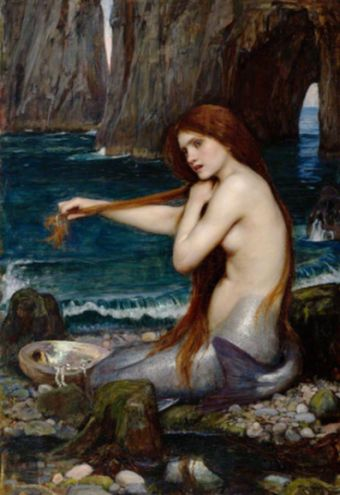
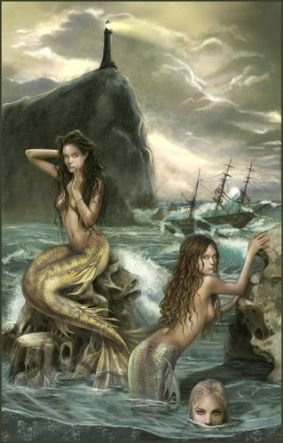

Undinės – mitinės vandens būtybės, sutinkamos daugelio pasaulio tautų folklore. Undinės vardas kilęs iš žodžio vanduo (tarmiškai vanduo vadintas undeniu) arba yra perimtas iš tą pačią reikšmę turinčio lotynų žodžio undine. Mitų apie gražias mergeles undines nuo seno turėjo ne tik aisčiai, bet ir graikai, albanai, rumunai, rytų ir pietų slavai. Panašios būtybės yra graikų nimfos, lot. undine, germanų Nixe, slavų Rusalka. Jos dažniausiai buvo kildinamos iš paskendusių jaunų merginų ar jaunamarčių vėlių, tik Baltarusijoje kartais jas laikydavo senomis ir vadindavo „vandens bobomis“.
Undinės dar buvo vadinamos upių martelėmis. Senovėje manyta, kad tai merginos, nusiskandinusios dėl nelaimingos meilės ir dievų paverstos undinėmis, kad galėtų keršyti jauniems vyrams už savo likimą ir būti upių bei ežerų globėjomis.
Prie undinių priskiriamos ir deltinyčios, gyvenusios Baltijos jūroje. Tai buvo moterų pavidalo nepaprasto grožio būtybės, apsirengusios drabužiais, panašiais į žuvų žvynus, padabintais perlais. Ant galvos turėjo mažytę gintaro karūną.
Lietuvių legendose undinės dažnai būdavo vaizduojamos nuogos, kartais su baltais drabužiais, ilgais plaukais, su karūnomis ar gėlių vainikais. Jos gyveno jūroje, upėse, ežeruose, o naktį mėnesienoje, išplaukusios iš vandens, pievose žaisdavo, šokdavo ir labai gražiai dainuodavo. Jos buvo aršiausios jaunų, gražių vyrų priešės. Kai tik kurį gražuolė pamatydavo ant jūros kranto, stengdavosi dainomis ir kitais žavesiais pavilioti pas save. Vargas tam, kuris paklausydavo klastingų undinių vilionių. Iš pradžių jos būdavo labai meilios, myluodavo paviliotus vyrus, kol šie sutikdavo nusileisti į vandenų dugną, o ten savo glėbyje undinės juos pasmaugdavo.
Šioms dievaitėms undinėms kas metai buvo aukojama po vieną iš visų rūšių žuvų, sugautų jūroje, maldaujant, kad nekenktų jauniems žvejams. Undinės net akimis galėdavo nužudyti ar pavergti žmogų. Jų akys spindėjo kaip žvaigždės, o palaidi plaukai skambėjo kaip tolima muzika, kuri užburdavo žmones. Ši muzika negalėdavo paveikti tik tų, kurie turėdavo paparčio žiedą. Vyriausioji iš undinių buvo Jūratė.
Neišbrendamose klampynėse gyveno undinė, tų liūnų valdovė. Nė vienas mirtingasis ten įėjęs, nelikdavo nenubaustas. Jei kas iš smalsumo peržengdavo uždraustą ribą ir pamatydavo stebuklingą valdovės veidą, tas amžinai turėdavęs klaidžioti po mišką, girdėti iš visų pusių pajuoką ir patyčias. Kartą undinės priviliojo jauną vaikiną, kuris dažnai eidavo prie jūros ir grožėdavosi ja. Jam taip bestovint, iš vandens pakilo merginų būrys ir jį apsupo. Vaikinas pasijuto krintantis į bedugnę ir ėmė šauktis pagalbos. Tuomet atsirado dievas Bangpūtys – jūros prižiūrėtojas ir pasakė vaikinui, kad šis atsidurs požemio pasaulyje, kur ras nepaprastus turtus. Vaikiną įsimylės ir piršis trys karalaitės, o jis turi pasirinkti jauniausiąją. Kai ves ir grįš į namus, tegul su ja negula galva prie galvos, o tik taip, kad vieno būtų kojos, kito galva ir tris dienas neturintis nė kiek užmigti. Pamokytas vaikinas laimingai grįžo į savo žemę.
